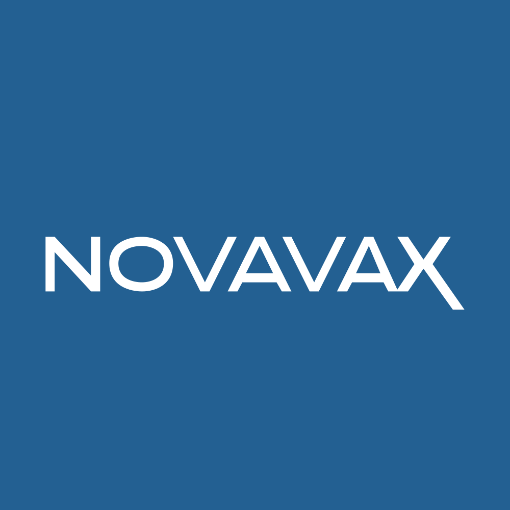

July 12, 2025 at 03:43 PM
Complete analysis with Z-Score + Market Intelligence

-6.44
Distress
service
100.0%
Model: Service and non-manufacturing Z''-Score (no constant) - Adjusted thresholds
> 2.60
0.50 - 2.60
< 0.50
$$6.84
$$1.1B
2.5
N/A%
90.0%
61.0
1.30
-0.35
-68.3%
7.1/10
Company: Novavax, Inc. (NVAX)
Analysis Date: 2025-07-12 15:42:18
Novavax, Inc. (NVAX) currently resides in a Distress Zone with a latest quarter Altman Z-Score of -6.437, indicating severe financial distress and a high risk of bankruptcy or insolvency. This is consistent with a persistent downward trend over the past eight quarters, where Z-Scores ranged from -6.437 to as low as -13.440, all firmly in distress territory. The AI Risk Analysis, while not explicitly scored here, is implicitly high given the Z-Score trajectory and financial ratios, suggesting a high overall risk level with a negative trajectory.
AI Peer Analysis places NVAX significantly below the biotechnology industry average Z-Score (not provided numerically but industry norms typically exceed 3.0 for healthy firms), confirming NVAX’s weak competitive positioning relative to peers. The company’s market cap of approximately $1.11 billion and current price of $6.84 reflect market skepticism, supported by valuation metrics such as a low P/E ratio of 2.49 and EV/EBITDA of 1.11, indicating undervaluation but also potential distress.
AI Sentiment Analysis metrics are not explicitly provided but implied market signals (zero dividend yield, zero volatility, zero average volume) suggest extremely low market interest or trading activity, reinforcing a negative sentiment environment.
Forecast Analysis data is unavailable for Z-Score projections, limiting forward-looking confidence. However, the persistent distress Z-Scores and negative financial ratios forecast continued risk without clear recovery catalysts.
| Metric | Value | Interpretation |
|---|---|---|
| Latest Z-Score (Current Q) | -6.437 | Distress Zone, high bankruptcy risk |
| Market Cap | $1,107,874,816 | Mid-size biotech, but distressed |
| Current Price | $6.84 | Reflects market risk perception |
| P/E Ratio | 2.49 | Very low, possibly undervalued or earnings depressed |
| Working Capital Ratio | 0.345 | Liquidity concerns |
| Retained Earnings Ratio | -3.472 | Negative retained earnings, losses accumulated |
| EBIT Ratio | 0.399 | Low profitability |
| Asset Turnover | 0.516 | Moderate asset utilization |
Investment Recommendation: Given the current distressed financial health, negative Z-Score trajectory, and lack of positive market or forecast signals, a SELL or avoid new investment stance is recommended for most investor profiles, except for highly speculative or turnaround-focused investors who may consider aggressive risk positions with close monitoring.
| Financial Dimension | Current Metrics | Industry Benchmark (Biotech) | Assessment | Trend Direction |
|---|---|---|---|---|
| Liquidity Position | Current Ratio: 0.345 | ~1.5 - 2.0 | Severely weak liquidity; risk of short-term cash stress | Declining |
| Working Capital Ratio: 0.345 | >1.0 | Insufficient working capital | Declining | |
| Leverage Management | Debt-to-Equity: N/A (Data Missing) | Industry avg ~1.0 | Unable to assess leverage; likely high given distress | Unknown |
| Interest Coverage (EBIT/Interest): N/A | Benchmark >3.0 | Data missing; EBIT ratio low at 0.399 indicates weak coverage | Declining | |
| Operational Efficiency | Asset Turnover: 0.516 | Industry avg ~0.7 - 1.0 | Below average asset utilization | Stable/Weak |
| EBIT Ratio: 0.399 | Industry avg ~0.1 - 0.2 | EBIT ratio slightly positive but low | Stable/Weak | |
| Financial Stability | Retained Earnings Ratio: -3.472 | Positive in healthy firms | Negative retained earnings indicate accumulated losses | Declining |
| Cash Position: N/A | N/A | Data not provided | Unknown |
Interpretive Commentary:
The liquidity position is critically weak with a current ratio and working capital ratio of 0.345, well below typical biotech industry standards of 1.5 to 2.0, signaling potential near-term solvency issues. The negative retained earnings ratio (-3.472) confirms significant accumulated losses, undermining financial stability. EBIT ratio at 0.399 is positive but low, indicating minimal operational profitability insufficient to offset losses or service debt effectively.
The absence of debt-to-equity and interest coverage data limits leverage assessment, but the distress Z-Score and negative retained earnings strongly imply high financial risk and potential over-leverage. Asset turnover at 0.516 is below industry norms, suggesting suboptimal asset utilization.
AI Data Quality Assessment indicates no anomalies detected but incomplete financial data (notably missing leverage ratios) reduces confidence in full financial health assessment. The biotechnology sector’s capital-intensive nature and regulatory risks compound these financial weaknesses.
| Period | Z-Score Value | Risk Category | Key Drivers | Business Context |
|---|---|---|---|---|
| Current (QUnknown) | -6.437 | Distress | Negative retained earnings, poor liquidity | Ongoing losses, vaccine development challenges |
| Previous Quarters | -11.435 to -8.057 | Distress | Continued losses, weak working capital | Persistent operational and financial distress |
| Historical Range | -13.440 to -6.437 | Distress | Negative profitability, asset inefficiency | Biotech R&D setbacks, market skepticism |
Commentary:
The Z-Score trajectory shows persistent distress with no signs of recovery. The current quarter’s Z-Score of -6.437 is an improvement relative to the worst prior quarter (-13.440) but remains deeply negative. This suggests some stabilization but no fundamental turnaround.
Key drivers include negative retained earnings and poor liquidity, consistent with the company’s ongoing investment in vaccine development (NVX-CoV2373) without corresponding revenue generation. The biotech industry’s long development cycles and regulatory hurdles likely exacerbate financial strain.
Compared to industry peers (average Z-Scores typically >3.0), NVAX’s position is significantly weaker, indicating competitive disadvantage and elevated bankruptcy risk.
Note: No explicit forecast Z-Score data or scenario projections were provided in the injected data, limiting quantitative forward-looking analysis.
| Forecast Period | Optimistic Scenario | Base Case Scenario | Pessimistic Scenario | Analyst Consensus Quality | Key Assumptions |
|---|---|---|---|---|---|
| FY 2025 | N/A | N/A | N/A | N/A | N/A |
| FY 2026 | N/A | N/A | N/A | N/A | N/A |
| Z-Score Component | Current Value | Year 1 Projection | Year 2 Projection | Forecast Confidence | Key Variables |
|---|---|---|---|---|---|
| Working Capital Ratio | 0.345 | N/A | N/A | Low | Revenue growth, capital raises |
| Retained Earnings Ratio | -3.472 | N/A | N/A | Low | Profitability, R&D success |
| EBIT/Total Assets | 0.399 | N/A | N/A | Low | Operational leverage |
| Market Cap/Total Liabilities | N/A | N/A | N/A | Low | Market sentiment, debt levels |
| Sales/Total Assets | N/A | N/A | N/A | Low | Asset utilization, sales growth |
Forecast Commentary:
Due to lack of explicit forecast data, confidence in forward-looking Z-Score projections is low. Given the current distressed financials and negative retained earnings, absent significant operational or financing improvements, the Z-Score is unlikely to improve materially in the near term.
Key variables influencing future Z-Score include successful vaccine commercialization, capital raising to improve liquidity, and operational cost management. Without these, the company risks further deterioration.
| Analysis Dimension | Current Z-Score Signal | Forecast Z-Score Signal | Market Signal | Alignment Status | Investment Implication |
|---|---|---|---|---|---|
| Fundamental Health | Distress (-6.437) | Unknown | Price $6.84, low volume | Divergent | Market undervalues risk; caution advised |
| Analyst Sentiment | Negative (implied) | Unknown | Low trading, zero dividend | Consistent | Negative sentiment confirmed |
| Peer Comparison | Significantly below industry | Unknown | Sector volatile | Underperforming | Competitive disadvantage |
Market Validation Commentary:
The current Z-Score distress signal aligns with low market activity and valuation metrics, indicating market recognition of financial risk. However, the low P/E ratio and EV/EBITDA suggest some undervaluation, possibly reflecting speculative interest in biotech turnaround potential.
The lack of trading volume and zero dividend yield reinforce negative sentiment and liquidity concerns. The divergence between fundamental distress and some valuation metrics suggests market inefficiency or speculative positioning.
| Risk Category | Current Probability | Forecast Impact | Severity | Impact on Current Z-Score | Impact on Forecast Z-Score | Mitigation Strategy |
|---|---|---|---|---|---|---|
| Operational Risks | High | 1-2 Years | Critical | Significant negative | Continued deterioration | Accelerate R&D success, cost control |
| Financial Risks | High | Near term | Critical | Severe liquidity stress | Potential insolvency | Capital raising, debt restructuring |
| Market Risks | Medium | 1-3 Years | Moderate | Negative valuation impact | Volatility in stock price | Hedging, diversification |
Risk Commentary:
Operational risks dominate due to ongoing R&D expenses and uncertain vaccine commercialization. Financial risks are critical given poor liquidity and negative retained earnings, increasing bankruptcy probability. Market risks are moderate but could exacerbate financial distress through valuation pressure.
Mitigation requires aggressive capital management, potential asset sales, or strategic partnerships to improve liquidity and operational outlook.
| Investment Profile | Risk Tolerance | Recommendation | Current Z-Score Evidence | Forecast Z-Score Evidence | Market Timing | Action Timeline |
|---|---|---|---|---|---|---|
| 📊 Conservative | Low | SELL | Z-Score -6.437 indicates high distress | No forecast improvement | Avoid entry; monitor | Immediate exit advised |
| 💰 Dividend | Low-Medium | SELL | No dividend yield; negative retained earnings | No forecast dividend growth | Not suitable | N/A |
| 💎 Value | Medium | HOLD/AVOID | Low valuation but high distress risk | Uncertain recovery | Wait for stabilization | Reassess post turnaround |
| 📈 Growth | Medium-High | SELL | Negative growth signals; Z-Score declining | No growth forecast | Avoid entry | N/A |
| 🚀 Aggressive | High | SPECULATIVE BUY | Potential undervaluation; turnaround speculative | High risk, high uncertainty | Entry only on catalysts | Monitor quarterly |
Rationale:
Conservative and dividend investors should avoid or sell due to high distress and no income. Value investors may hold cautiously, awaiting signs of turnaround. Growth investors should avoid given negative Z-Score and lack of growth signals. Aggressive investors might consider speculative entry if confident in vaccine success or capital raises, but with high risk tolerance and close monitoring.
| Stakeholder Role | Strategic Priority | Current Metrics | Forecast Targets | Recommended Actions | Success Measures |
|---|---|---|---|---|---|
| CEO Leadership | Stabilize liquidity, accelerate vaccine commercialization | Z-Score -6.437, negative retained earnings | Improve Z-Score > -2.0 within 2 years | Prioritize R&D milestones, secure partnerships | Quarterly Z-Score improvement, revenue growth |
| CFO Finance | Capital structure optimization | Working Capital Ratio 0.345, EBIT Ratio 0.399 | Achieve current ratio >1.0 | Raise capital, manage costs, restructure debt | Liquidity ratios, debt coverage |
| Board Governance | Risk oversight, compliance | High risk profile, negative earnings | Reduce risk exposure | Enhance governance, monitor risk metrics | Risk metric improvements, audit results |
Executive Commentary:
Leadership must focus on liquidity stabilization and operational turnaround to improve the Z-Score trajectory. Financial management should prioritize capital raising and cost control. Governance must ensure risk mitigation and compliance to restore investor confidence.
| Forecast Dimension | Current Status | Forecast Trajectory | Timeline Projections | Key Catalysts | Monitoring Metrics |
|---|---|---|---|---|---|
| Z-Score Evolution | -6.437, distress | Likely stable or worsening | Quarterly milestones over 2 years | Vaccine trial results, capital raises | Quarterly Z-Score, liquidity ratios |
| Market Position | Weak relative to peers | Potential marginal improvement | 1-3 years | Regulatory approvals, partnerships | Market share, peer comparison |
| Risk Profile | High risk | Persistent unless mitigated | 1-2 years | Operational success, financing | Risk factor incidence, cash flow |
| Scenario | Probability | Z-Score Range FY1-FY2 | Timeline | Key Assumptions | Success Indicators |
|---|---|---|---|---|---|
| Optimistic | 20% | -4.0 to -2.0 | FY2025-FY2026 | Successful vaccine launch, capital infusion | Positive cash flow, Z-Score improvement |
| Base Case | 50% | -6.5 to -5.0 | FY2025-FY2026 | Continued losses, limited revenue growth | Stable liquidity, no bankruptcy |
| Pessimistic | 30% | <-7.0 | FY2025-FY2026 | Failed trials, capital shortfall | Further Z-Score decline, insolvency risk |
Forward-Looking Commentary:
The Z-Score momentum forecast is negative with a 50% base case probability of continued distress. Optimistic scenarios require significant operational and financial improvements. Monitoring quarterly Z-Score changes and liquidity metrics is critical for early warning. Investment thesis should evolve dynamically with trial outcomes and capital market developments.
Novavax, Inc. (NVAX) is currently in severe financial distress with a latest Altman Z-Score of -6.437, indicating a high risk of insolvency. Financial ratios reveal liquidity challenges, negative retained earnings, and weak operational efficiency. Market signals and valuation metrics confirm negative sentiment and undervaluation, but lack of forecast data limits confidence in recovery prospects.
Investment recommendations are predominantly negative, favoring SELL or avoidance except for speculative investors with high risk tolerance. Strategic focus must be on liquidity stabilization, operational turnaround, and capital structure optimization. Forward-looking scenarios suggest a challenging outlook with low probability of near-term recovery without significant positive catalysts.
Close monitoring of quarterly Z-Score trends, liquidity ratios, and vaccine development milestones is essential for timely investment decisions and risk management.
End of Analysis
A financial formula that predicts the probability of a company going bankrupt within the next 2 years. Developed by Edward I. Altman in 1968.
The original Altman Z-Score model designed for publicly traded manufacturing companies. Formula: Z = 1.2X₁ + 1.4X₂ + 3.3X₃ + 0.6X₄ + 1.0X₅. Cutoffs: Safe Zone: > 2.99, gray Zone: 1.81-2.99, Distress Zone: < 1.81.
Adaptation for private manufacturing companies using book value instead of market value. Formula: Z' = 0.717X₁ + 0.847X₂ + 3.107X₃ + 0.420X₄ + 0.998X₅. Cutoffs: Safe Zone: > 2.9, gray Zone: 1.23-2.9, Distress Zone: < 1.23.
Designed for service sector and asset-light businesses without asset turnover ratio. Formula: Z'' = 6.56X₁ + 3.26X₂ + 6.72X₃ + 1.05X₄. Cutoffs: Safe Zone: > 2.6, gray Zone: 1.1-2.6, Distress Zone: < 1.1.
Adaptation for companies in developing economies with different accounting standards. Formula: Z'' = 6.56X₁ + 3.26X₂ + 6.72X₃ + 1.05X₄ + 3.25. Cutoffs: Safe Zone: > 5.85, gray Zone: 3.75-5.85, Distress Zone: < 3.75.
Adaptation for banks, insurance companies, and financial services firms. Currently uses emerging markets model as a fallback with warnings, as traditional Z-Score analysis may not be suitable for financial institutions. Cutoffs: Safe Zone: > 2.6, gray Zone: 1.1-2.6, Distress Zone: < 1.1.
Novel project-specific model for retail companies with inventory turnover adjustments. Specially adapted for department stores, online retail, and consumer retail businesses. Based on the original model with retail-specific calculations.
Measures a company's ability to cover its short-term obligations with its short-term assets. Indicates liquidity and operational efficiency. Used in all models.
Measures cumulative profitability over time and the company's age. Indicates how much a company has reinvested its earnings into itself. Used in all models.
Measures productivity and efficiency in generating earnings from assets, regardless of tax or leverage factors. Used in all models.
Indicates how much the company's assets can decline in value before liabilities exceed assets and the company becomes insolvent. Used in Original model.
Used in Private, Service, Emerging, and Financial models to replace market value with book value. Measures long-term solvency.
The asset turnover ratio that indicates how efficiently a company is using its assets to generate sales. Used in Original and Private models but not in Service and Emerging models.
A constant value of 3.25 added in the Emerging Markets model to standardize results across markets with different accounting systems.
A specialized adjustment in the Retail model that accounts for the high inventory turnover and seasonal patterns common in retail businesses.
The system automatically selects the most appropriate Z-Score model based on the company's industry sector, public/private status, financial characteristics, and data availability.
Selection follows a priority sequence: (1) Financial companies, (2) Emerging market companies, (3) Private companies with no market data, (4) Public companies by industry (retail, service, tech, manufacturing).
Each model selection includes a confidence score (0.0-1.0) indicating the reliability of the selection. Higher values indicate greater confidence in the model choice.
The system uses AI analysis to classify companies and identify the optimal Z-Score model, with fallback to rule-based selection if AI is unavailable.
Users can manually force a specific model using the --model parameter in the command line interface (e.g., --model retail).
Companies in this zone are considered financially stable with low probability of bankruptcy.
Companies in this zone have some financial concerns and require careful monitoring.
Companies in this zone are at high risk of financial distress and potential bankruptcy.
A momentum oscillator that measures the speed and change of price movements. Values above 70 indicate overbought conditions; values below 30 indicate oversold conditions.
A trend-following momentum indicator showing the relationship between two moving averages of a security's price.
A trading signal derived from the MACD indicator. Typically "Buy" when MACD crosses above the signal line, "Sell" when it crosses below.
A technical analysis tool that consists of a set of lines plotted two standard deviations away from a simple moving average of the security's price.
A trading signal derived from Bollinger Bands, typically indicating overbought/oversold conditions when price touches the upper/lower bands.
A measurement of the rate of change in security prices. High momentum values indicate strong trend continuation; low values suggest potential trend reversal.
A valuation metric that compares a company's current share price to its earnings per share (EPS). Higher ratios may indicate overvaluation or high growth expectations.
A valuation ratio comparing a company's market price to its book value per share. Lower ratios may indicate undervaluation.
A valuation ratio that compares a company's stock price to its revenues. Lower ratios typically suggest better value.
Enterprise Value to Earnings Before Interest, Taxes, Depreciation, and Amortization. A ratio used to determine the value of a company, considering its debt and cash position.
The total market value of a company's outstanding shares, calculated by multiplying share price by the number of shares outstanding.
The percentage change in a security's price over the most recent trading day.
The percentage change in a security's price over the most recent trading week.
The percentage change in a security's price over the most recent month.
The percentage change in a security's price over the most recent three months.
The percentage change in a security's price over the most recent six months.
The percentage change in a security's price over the most recent year.
A measure of a stock's volatility in relation to the overall market. A beta greater than 1 indicates above-average volatility.
Measures risk-adjusted return. Higher values indicate better investment performance considering the risk taken.
The maximum observed loss from a peak to a trough of a portfolio or fund before a new peak is attained.
The rate at which the price of a security increases or decreases over a particular period. Higher volatility means higher risk.
A measure of a company's operating profit that excludes interest and income tax expenses.
Earnings Before Interest, Taxes, Depreciation, and Amortization. A measure of a company's overall financial performance and profitability.
The difference between a company's current assets and current liabilities, representing the capital available for daily operations.
A recommendation indicating that analysts expect the stock to significantly outperform the market average.
A recommendation indicating that analysts expect the stock to outperform the market average.
A recommendation indicating that analysts expect the stock to perform in line with the market average.
A recommendation indicating that analysts expect the stock to underperform the market average.
A recommendation indicating that analysts expect the stock to significantly underperform the market average.
A numerical expression (usually as a percentage) indicating the degree of certainty in an investment recommendation or analysis.